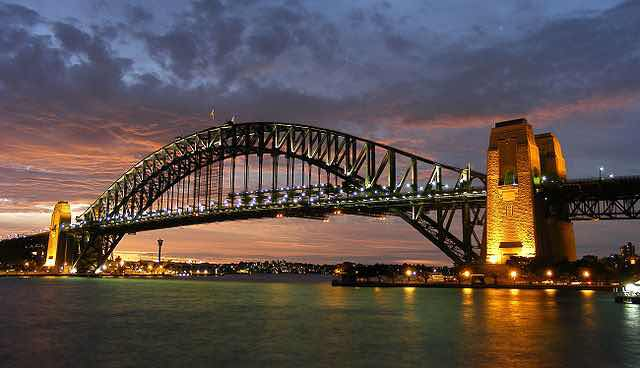
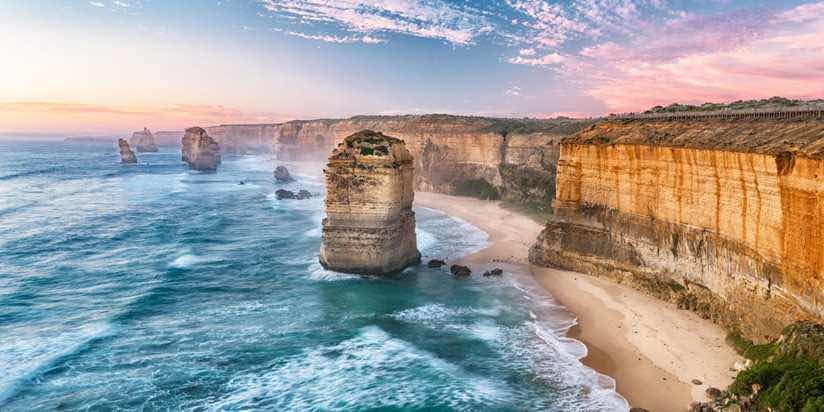
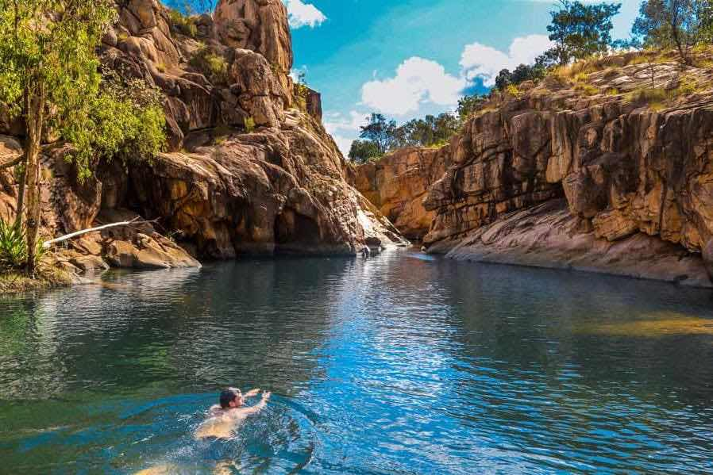

Sydney Opera House.
Kjent for det ikoniske arkitekturiske designet. Operahuset er en av de mest særpregede og berømte bygninger fra 1900-tallet. Operahuset ble designet av den danske arkitekten Jørn Utzon, og formelt åpnet i 1973 av Dronning Elizabeth II.

Harbour Bridge.
Et minne fra 134m over havet. Broen ble bygget for å binde sammen den nordlige delen av Sydney med den sørlige. Ligger bare noen få hundre meter unna Operahuset. Broen består av 53,000 tonn stål og 6 millioner nagler.

Great Ocean Road.
En fantastisk og visuell opplevelse! Gjør deg klar for en 243 kilometer lang turistvei langs kysten mellom Torquay og Allansford i Victoria, Australia. Bygd av soldater etter 1 verdenskrig, great ocean road er i dag verdens største krigsminne. Veien byr på fantastiske naturformasjoner som Twelve Apostles og Port Campbell Cove.

Kakaduo Nasjonalpark.
Skog, dyr og vann. Hva mer skulle du ønske? Velkommen til en nasjonalpark i Nordterritoriet i Australia på 20 000 kvadratkilometer. Parken byr på mange spennende opplevelser, hvor av over 10,000 krokodiller, fem flotte fossefall og veggmalerier over 20,000 år gamle.